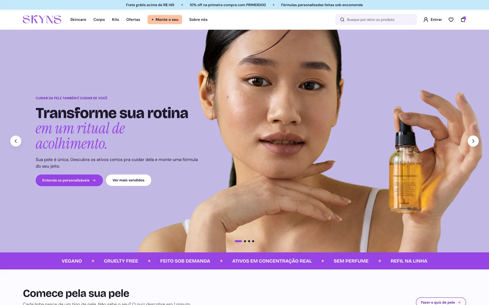
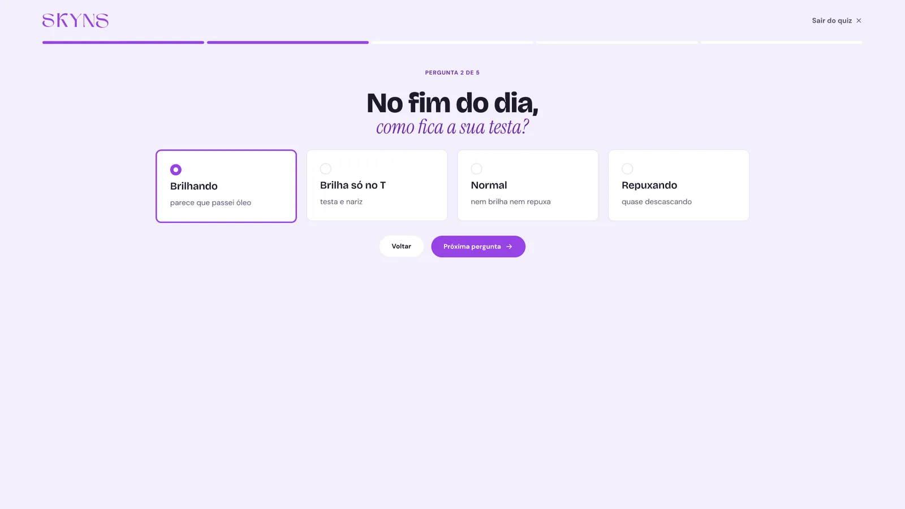
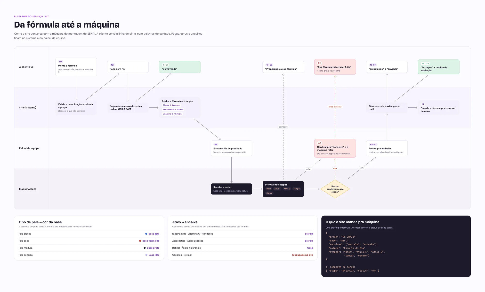
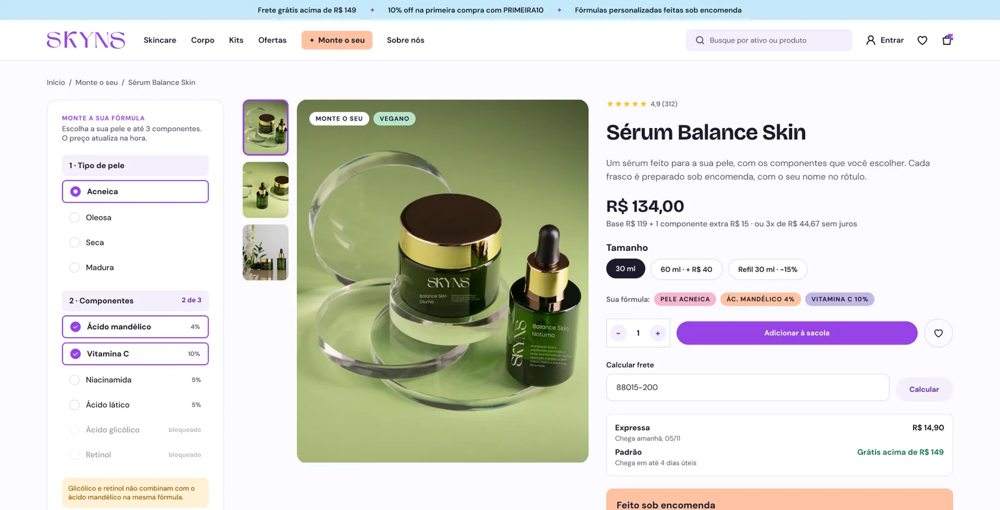
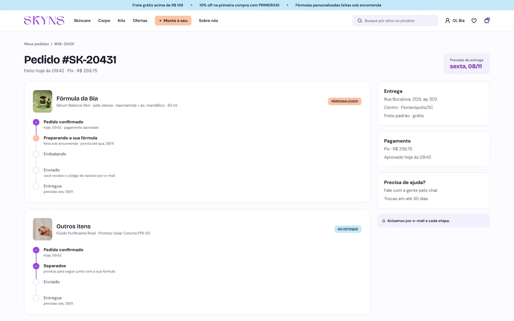
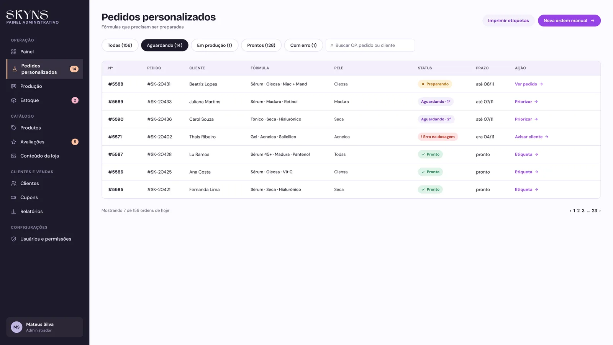
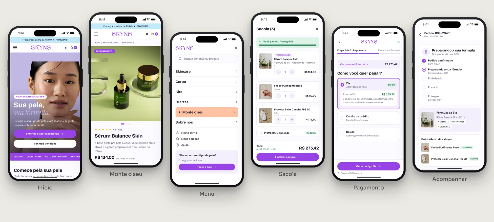

SKYNS: dermocosméticos personalizáveis: a cliente monta a fórmula pra própria pele, e uma máquina de IoT prepara o produto
- Meu papel
- UX/UI Design
- Contexto
- Projeto acadêmico em equipe · SENAI/SC
- Equipe
- 5 pessoas
- Entregas
- Loja, painel, e-mails, handoff
Escolher skincare é tentativa e erro, principalmente pra peles sensíveis, acneicas e negras.
Um quiz que descobre o tipo de pele e um Monte o seu que só combina ativos seguros. Uma máquina de IoT prepara cada fórmula.
Nos testes com 8 colegas de outros projetos, 7 montaram a fórmula sozinhos na primeira tentativa, em menos de 2 minutos.


Página inicial e quiz de pele.
Vender um produto personalizável usando a máquina do semestre de IoT.
Produto personalizável
A loja precisava vender algo que a cliente montasse do jeito dela.
Uma ideia criativa
Nada de loja genérica: o conceito tinha que justificar a personalização.
Usar a máquina de IoT
O sistema conversa com a máquina de montagem do SENAI, peça por peça.
Escolher skincare ainda é tentativa e erro.
Rótulo genérico, linguagem técnica e campanha que quase sempre mostra a mesma pele. Quem mais sofre são as peles sensíveis, acneicas e negras: gastam mais e acertam menos.
Pele sensível
Um ativo errado já basta pra arder, descamar e manchar.
Pele acneica
Produto pesado demais piora justamente o que deveria tratar.
Pele negra
Pouco produto pensado pra manchas e hiperpigmentação, e quase nenhuma foto que se pareça com ela.
Ouvimos quem usa e quem indica.
Antes de desenhar qualquer tela, a equipe foi atrás de clientes e de profissionais da pele pra entender onde a escolha dá errado.
Questionário online sobre hábitos, gastos e frustrações com skincare.
Entrevistas com dermatologistas e esteticistas sobre os erros mais comuns.
Conversas com pessoas de pele sensível, acneica e negra.
A pessoa não sabe o que a própria pele precisa.
Questionário online com 126 pessoas de 18 a 54 anos · 2026
“O maior erro é escolher pela embalagem ou pela indicação da amiga. A pessoa não sabe o tipo de pele que tem e ainda mistura ativo que não combina.”
Dermatologista entrevistada
O que ouvimos e o que fizemos com isso.
E se a máquina montasse o cuidado da sua pele?
A máquina do SENAI monta caixinhas peça por peça. O site traduz a escolha da cliente nessa linguagem: o tipo de pele escolhe a cor da base, e cada ativo vira um encaixe. Produtos comuns saem do estoque; os personalizáveis são feitos sob encomenda, um a um.
4 bases
Oleosa, seca, madura e acneica, cada uma com uma cor de base na máquina.
Até 3 encaixes
Niacinamida, vitamina C, ácidos e retinol viram peças encaixadas na base.
5 etapas
O site envia a ordem de montagem e o sensor da máquina devolve cada etapa concluída.

Da escolha no site até a ordem de montagem e o retorno do sensor.
Liberdade pra escolher, segurança pra não errar.
A cliente escolhe o tipo de pele e até 3 ativos, e o preço atualiza na hora. Ativos que não combinam com o que já foi escolhido ficam bloqueados, com o motivo escrito do lado.

Três lados da mesma fórmula.
A cliente
Descobre o tipo de pele, monta a fórmula, compra, acompanha e troca.
A equipe
Acompanha a fila da máquina, o estoque de insumos, pedidos, avaliações e conteúdo.
A máquina
Recebe a ordem com base e encaixes, monta em 5 etapas e devolve o status pelo sensor.

A cliente acompanha a fórmula sendo preparada.

A equipe vê a fila da máquina e cada etapa da montagem.
A mesma loja, na palma da mão.
Menu em gaveta, Monte o seu em etapas curtas e um checkout pensado pro polegar.

Da loja ao painel, com os erros desenhados.
Quando o produto tem hardware, o design muda.
A máquina define as opções
4 bases e 2 tipos de encaixe viraram as regras do Monte o seu. O limite do hardware virou escolha guiada.
Esconder a complexidade
A cliente não precisa saber como a máquina funciona. Ela precisa saber quando a fórmula fica pronta.
Sob encomenda pede mais estados
Um pedido feito na hora tem mais etapas, mais esperas e mais jeitos de dar errado. Cada um ganhou uma tela.
Quer ver o processo completo?
Telas, fluxos, estados de erro, design system e handoff, do jeito que foram entregues.